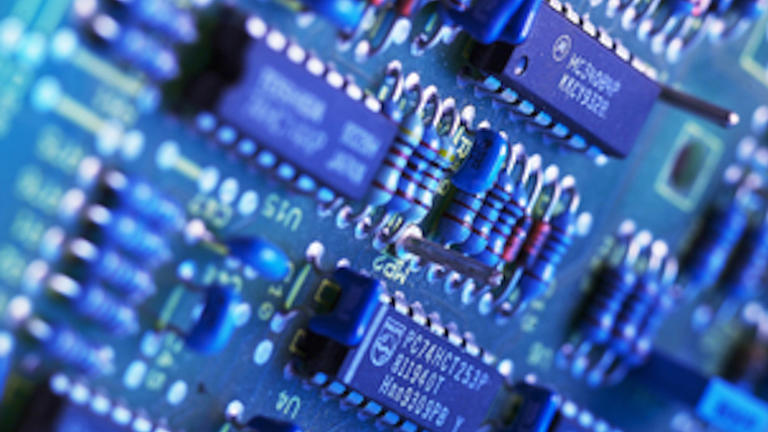
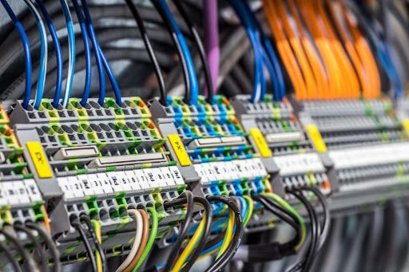
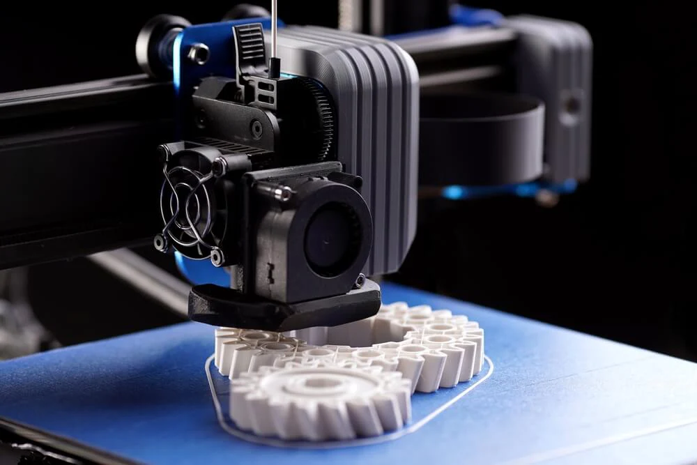
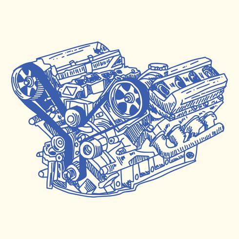

Hier zeige ich meine Projekte und stelle auch die dazugehörigen unterlagen zur verfügung. Von Elektrotechnik, 3D-Modellen, Programierung bis hin zu Autos und Mechanik. Bei mir gibts alles das was man brauch. Falls ich doch nicht das haben sollte was benötigt wird könnt ihr mich über die Konntaktseite einfach erreichen!
Meine Website befindet sich noch im aufbau, also falls fehler gefunden werden oder verbesserungsvorschläge vorhanden sind könnt ihr euch gerne Melden.
Mehr erfahren
Egal ob DIY oder einfach Schaltungen aus dem Internet hier findest Du was du für deine Hobby-Projekte benötigst. Ob einfache Ansteuerung oder komplizierte Analogwertverarbeitung. Ich biete dir hier die Möglichkeit einfach mal durch die einzelnen Projekte zu stöbern.

Viel Kabel und viel Farben? Kein Problem hier findest Du alles über Grundlegende Elektrische Schaltungen bis hin zu Komplexen Automatisierungen. Der blick hinein lohnt sich auf jeden fall für begeisterte.
Ich zeige Dir hier wie du SPS ob von Siemens oder auch von WAGO einrichtest und wie Du sie benutzt. Gezeigt wird natürlich auch, wo du diese herunterladen kannst!

Was ist das? Wie fange ich am besten an und welche Software benötige ich? Auch der Drucker spielt hierbei eine wichtige Rolle! Einfach mal reinschauen was es gibt. Bestimmt findest du was.
Du willst eigene kleine Projete mit Mikrokontrollern erstellen, weißt aber nicht wie? Hier kann ich dir bestimmt was zeigen. Welcher Mikrokontroller, Software oder welche Programiersprache? Hier wirds gezeigt.

Hier zeige ich dir alles über den Golf 2 was du wissen musst um selbst hand anlegen zu können! Auch ich hab mal angefangen. Es gibt natürlich auch anleitungen zu anderen Herstellern und Autos! Einfach ein blick reinwerfen.